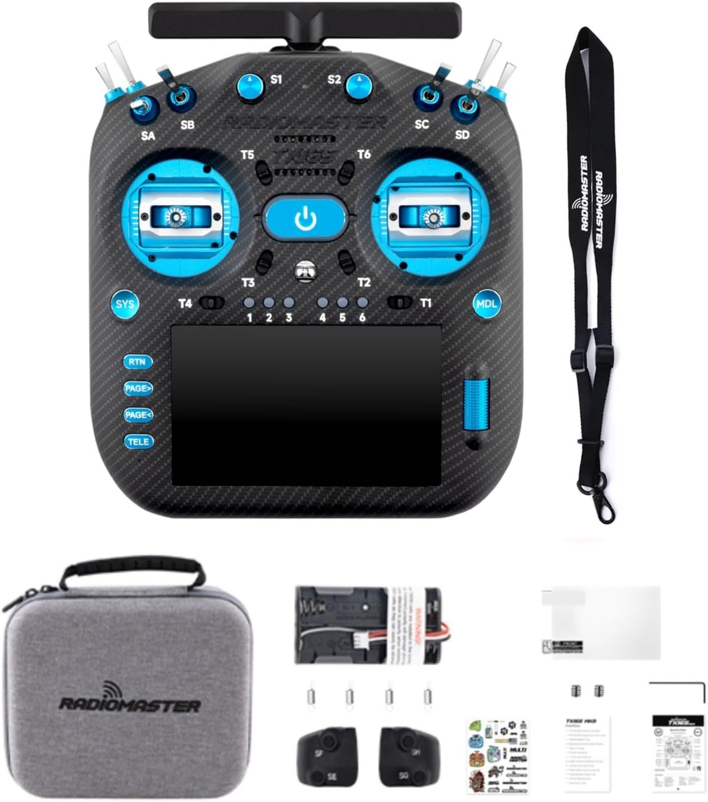

Amazon.ca · TX16S MK3 MAX
RadioMaster TX16S MK3 MAX
Transmisor RC de gama alta con ExpressLRS de doble banda 2.4GHz/900MHz, gimbals CNC Hall AG02 y pantalla táctil IPS de 5", ejecutando EdgeTX.
Ver precio en Amazon
- Procesador STM32H7 para respuesta ultrarrápida y rendimiento estable en vuelo FPV.
- Pantalla táctil IPS de 5" (480×800), legible bajo el sol, para programación fácil.
- ExpressLRS Gemini de doble banda 2.4GHz y 900MHz con transceptores LR1121, baja latencia.
- Gimbals CNC de aluminio AG02 con suavidad, precisión y durabilidad excepcionales.
- Diseño premium: carcasa tipo fibra de carbono, botones CNC y luces RGB programables.
- Firmware EdgeTX y paneles modulares para una configuración personalizada.
Para RadioMaster TX16S MK3 ELRS
Ver en Amazon (Solo Miembros)
Necesitas receptores ExpressLRS (ELRS):
- RadioMaster RP1
- RadioMaster RP3
- RadioMaster RP4TD
- Happymodel EP1
- Happymodel EP2